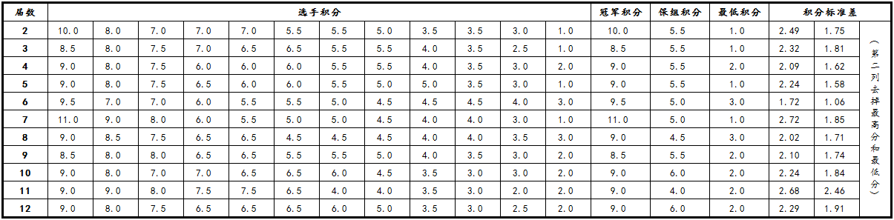

因为第一届世界连珠锦标赛是10人单循环，故不做统计。

※ 唯一在世锦赛未能取得胜绩的是奥地利棋手Mikhail Unterweger（第二届，2和9负1分），除此之外所有棋手都取得过至少一盘胜利。
※ Ando在第七届中取得11连胜的战绩，至今无人复制；他和中村茂是仅有的两个以10分或以上成绩夺冠的选手（Ando第七届11胜、中村茂第二届9胜2和）。
※ Ando在第六届中9.5分夺冠，他还在第三届和第九届中两次以8.5分的最低冠军积分夺冠。
※ 除此之外的巧合：其他所有的冠军都是以9分夺冠的。
※ 历届冠军积分平均值为9.2分。
※ 冠亚军积分差从0分（第十一届）到2.5分（第六届）。
※ 历届保组积分平均值为5.3分。
※ 保组上下积分差从0分到1.5分（第十届）
※ 整体积分标准差在第七届达到了最高的2.72分，但那是由于Ando一个人发挥过于出色导致整体竞争水平下降；第十一届的积分标准差高的实实在在，但就此判断第十一届的竞争不够激烈也并不妥，事实上第十一届的第六名和第七名之间有不可思议的2.5分的巨大差距，显示了强手和弱手的巨大相对差异，但在前六名和后六名之间还是有相当的竞争的。事实上那一届也是唯一一次发生冠亚军同分的情况。
※ 尽管拥有最大的冠亚军积分差，但整体积分标准差还是在第六届达到了最低的1.72分，去掉最高分和最低分之后标准差更是缩减到了不可思议的1.06分！显示了那一届比赛令人窒息的竞争程度；那次比赛的最低积分高达3分。
====================
第十三届的情况如下：
※ Tunnet是遵循历史规律，负于曹冬再次以9分夺冠？还是和棋一盘跳出怪圈9.5分夺冠？甚至战胜曹冬后加入中村和Ando的10分俱乐部？
※ 按照我的预测，本届比赛的保组积分为6分，比较高，更不可思议的是排在第八的6分选手竟然还不能保组！这从一个侧面显示出了后四名选手与前面选手较大的实力差距，过多地被刷分。
※ 按照我的预测，本届比赛的积分标准差为2.34分，去掉最高分和最低分之后为1.88分，均稍高于历史平均水平，即竞争激烈程度处在中等偏下。［ 黄药师 于 2013-8-14 12:20:54 时奖励此帖[金币加 100 威望加1］
［此帖子已被 屏蔽 在 2013-8-14 12:21:45 编辑过］
［ 小红眼镜同学于 2013-8-14 12:32:40 时花20金币送鲜花一朵］
［ 小红眼镜同学于 2013-8-14 12:32:51 时花20金币送鲜花一朵］
［ 一夜晴同学于 2013-8-14 12:37:59 时花20金币送鲜花一朵］
［ 一夜晴同学于 2013-8-14 12:37:59 时花20金币送鲜花一朵］
［ 一夜晴同学于 2013-8-14 12:37:59 时花20金币送鲜花一朵］
［ 一夜晴同学于 2013-8-14 12:37:59 时花20金币送鲜花一朵］
［ 一夜晴同学于 2013-8-14 12:37:59 时花20金币送鲜花一朵］
［ 一夜晴同学于 2013-8-14 12:37:59 时花20金币送鲜花一朵］
［ 一夜晴同学于 2013-8-14 12:37:59 时花20金币送鲜花一朵］
［ 一夜晴同学于 2013-8-14 12:37:59 时花20金币送鲜花一朵］
［ 一夜晴同学于 2013-8-14 12:37:59 时花20金币送鲜花一朵］
［ 一夜晴同学于 2013-8-14 12:37:59 时花20金币送鲜花一朵］
［ 淡月疏星同学于 2013-8-14 13:26:06 时花20金币送鲜花一朵］
［ 淡月疏星同学于 2013-8-14 13:26:06 时花20金币送鲜花一朵］
［ 淡月疏星同学于 2013-8-14 13:26:06 时花20金币送鲜花一朵］
［ 岑小鱼同学于 2013-8-14 18:32:14 时花20金币送鲜花一朵］
［ 岑小鱼同学于 2013-8-14 18:32:14 时花20金币送鲜花一朵］
［ 岑小鱼同学于 2013-8-14 18:32:14 时花20金币送鲜花一朵］
［ 岑小鱼同学于 2013-8-14 18:32:14 时花20金币送鲜花一朵］
［ 岑小鱼同学于 2013-8-14 18:32:14 时花20金币送鲜花一朵］
［ 冰雪笑醉同学于 2013-8-15 13:40:15 时花20金币送鲜花一朵］
［ 冰雪笑醉同学于 2013-8-15 13:40:15 时花20金币送鲜花一朵］
［ 冰雪笑醉同学于 2013-8-15 13:40:15 时花20金币送鲜花一朵］
［ 冰雪笑醉同学于 2013-8-15 13:40:15 时花20金币送鲜花一朵］
［ 冰雪笑醉同学于 2013-8-15 13:40:15 时花20金币送鲜花一朵］
［ 冰雪笑醉同学于 2013-8-15 13:40:15 时花20金币送鲜花一朵］
［ 冰雪笑醉同学于 2013-8-15 13:40:15 时花20金币送鲜花一朵］
［ 冰雪笑醉同学于 2013-8-15 13:40:15 时花20金币送鲜花一朵］
［ 冰雪笑醉同学于 2013-8-15 13:40:15 时花20金币送鲜花一朵］
［ 冰雪笑醉同学于 2013-8-15 13:40:15 时花20金币送鲜花一朵］
昨日非常坑爹地只预测到三盘
最终tunnet9.5分夺冠 打破怪圈 并成为继中村和Ando之后又一位不止一次获得世锦赛冠军的棋手
本届保组积分为6.0，5.5分的冈部宽惨死
本届比赛的积分标准差为2.17分，去掉最高分和最低分之后为1.62分，均稍低于历史平均水平
由于末轮的精彩竞争，本次比赛的竞争激烈程度处在中等偏上。
屏蔽老师出地都是精品
严谨地学术精神和极强地逻辑严谨度俺老猪十分叹服